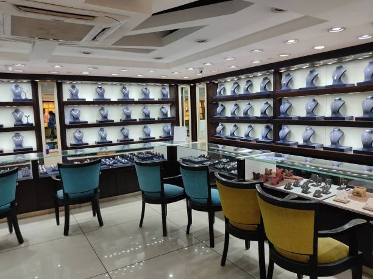

Welcome to My Portfolio
Introduction
Hello! I'm Jai Trivedi, an experienced Analytics professional. With over four years of experience in data science and analytics across diverse industries, I bring a well-rounded skill set and a proven track record of delivering impactful solutions.
I have expertise in SQL, Python, and Tableau, and a strong background in predictive analytics. Skilled in developing predictive models, project roll-out, and leading cross-functional collaborations.
Work Experience
Collaborated with cross-functional stakeholders (finance, marketing, and operations) to design data-driven pricing and promotional strategies, leveraging SQL for data aggregation and delivering actionable insights.
Developed and maintained analytics for a ~$100M/year rewards program at a Fortune 50 Med-Tech company, using SQL to extract and aggregate data and Tableau for impactful visualizations.
Implemented automated inventory tracking systems with SQL and Python, enabling national account managers to monitor inventory levels, prevent SKU shortages, and proactively optimize supply chain operations.
Integrated a GenAI chatbot into sales operations, leveraging machine learning workflows to achieve a 30% reduction in average customer handling time and streamline operational efficiency.
-
Automated operational processes using Python, saving $133,000 annually by reducing project execution time by 25% and ensuring consistent, scalable task completion.
Designed and deployed a dynamic Tableau dashboard for real-time monitoring of sales metrics for 37,000 accounts, improving stakeholder visibility and enabling data-backed decision-making.
Facilitated agile development cycles, collaborating with cross-functional teams to prioritize and refine features for machine learning models managing over 15 million customer records.
Partnered with data scientists to design and optimize predictive models for patient survival outcomes, achieving a 16% improvement in accuracy by applying advanced machine learning techniques.
Delivered a 4% revenue lift by developing a promotional effectiveness model, incorporating key metrics like revenue, ROI, and market share using Python and SQL for data processing and analysis.
-
Led to successful deal closure worth $2.5 million for the client’s marketing team by analyzing sales data using SQL and secondary market research to recommend pricing strategies.
Reduced time spent on ad-hoc reporting by 40% by increasing visibility and accessibility of key performance metrics (KPIs) by designing an automated Tableau dashboard
Senior Data Analyst Genpact (Aug 2023 - Present)
Decision Analytics Associate ZS Associates (April 2021 - June 2022)
Data Analyst Evalueserve (June 2019 - July 2020)
Skills

- Python
Projects using Python:
Developed a sentiment analysis tool for customer feedback using Python and NLP libraries.
- SQL
Database Management:
Created complex queries to support financial data reconciliation.
- Tableau
Visualization Examples:
Built interactive sales dashboards for executive reporting.
- Machine Learning
Notable Model:
Trained a model to predict stock price trends with 85% accuracy.
Projects

- Predicting Air-Passenger Headcount:
Details:
Built time series ARIMA model to analyze air-passenger headcount with an R² of ~0.90.
- DBMS for Indian Jewelry Retailer:
Highlights:
Prepared SQL queries to evaluate key business metrics like inventory turnover.
 - Predicting Stadium Attendance:
Summary:
Proposed a model using Light GBM and Random Forest to predict attendance, saving $100,000 annually.